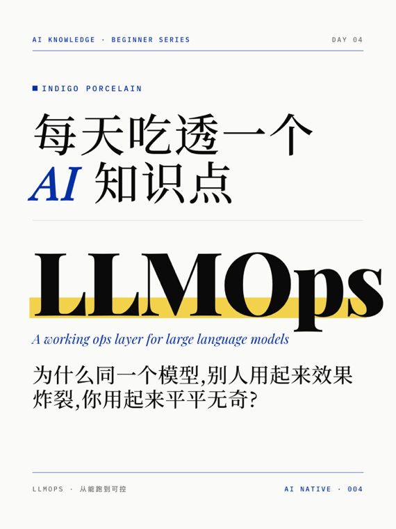
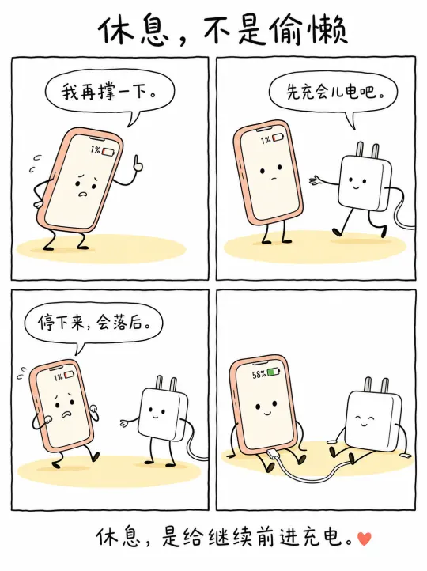

我把任务、截止时间和可用时段写成一张清单。遇上排不下的事，先请它标出冲突，再由我决定挪哪一项。
小红书内容生成
把一个选题或一段草稿，做成有标题、正文和配图的小红书笔记。在 DeepSeek Harness 里就能写、选图和预览。
使用自己的 Pipeline 账号，生成内容使用 Pipeline 积分。创作示例一种笔记写法我让 AI 帮我排下周，先给了它这三样东西
想分享一个 AI 小技巧？
在「原创创作」输入：怎样让 AI 帮我梳理下周的任务？
给同一篇笔记，选一种画法
下面是插件内的配图风格示例。文案完成后，可以选择画法生成配图，再到详情页预览图文排在一起的样子。


安装到 Harness
还没有 Harness？先从 DeepSeek 官网获取桌面客户端。
Windows 和 Mac 使用同一个地址
点击「复制安装地址」，在 Harness 打开「插件 → 添加插件」，粘贴 GitHub 仓库地址，点击「安装」。
已经在用「插件 → 发现」？
在收录本插件的来源中搜索 小红书内容生成，找到 Pipeline｜小红书内容生成，核对作者「玄清」，点「安装」并确认。
如果搜不到，想把本插件加入「发现」，打开「插件 → 实验性插件」，启用「自定义插件索引」。回到「发现 → 添加索引源」，粘贴下面的地址，选中新添加的来源，再搜插件名。
Mac 安装包在哪里？
下载 Mac 安装包，解压后双击「安装小红书插件.command」，按安装窗口提示继续。
做出你的第一篇笔记
只有一个想法也可以开始。写到哪一步，都可以从「任务池」查看进度和成品。
- 打开插件，登录 Pipeline。 在 Harness 侧栏点击插件名称。首次使用可以在登录页注册并验证邮箱，到「品牌管理」填写你的账号定位，例如“给上班族分享 AI 工具”。
- 写下选题或粘贴草稿。 在「原创创作」选「主题」或「草稿」，输入想写的内容，选择文案专家，点击「生成文案」。可以先到「账户积分」查看余额。
- 生成配图，预览成稿。 文案完成后选择配图风格并生成。在任务池进入详情，检查标题、正文和笔记预览。
- 发布到自己的小红书账号。 复制文案、下载配图，到小红书核对排版后确认发布。
想从收藏的原帖开始写？
打开「收藏库」，按页面指引安装配套的浏览器收藏扩展。在浏览器收藏原帖后，回到收藏库选择「开始仿写」，生成自己的版本。